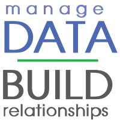
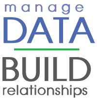

Melody founded Highland Advancement Solutions with the objective of helping nonprofit organizations fulfill their missions and serve their donors. Through more than 20 years in the development field, she has served as a solicitor, volunteer manager, event coordinator, database system administrator, senior Crystal Reports architect, and director of advancement services. As principal, she provides consulting and guidance to nonprofit management teams concerning data standardization, operational challenges, change management, and advancement best practices.
Before her nonprofit career, Melody served in the Army, managed several businesses—including a martial arts studio—and held state and local offices with the Pennsylvania Jaycees. She has extensive volunteer experience, and is currently a member of two committees and chair of the Curriculum Committee
for the Association of Advancement Services Professionals (AASP)
. She is also a member of the Association of Donor Relations Professionals, the Association of Professional Researchers for Advancement, and the Willamette Valley Development Officers. Her cross-industry experience has proven vital to formulating highly successful solutions to sticky data challenges.
She is the recipient of the Council for the Advancement and Support of Education (CASE), the Circle of Excellence Silver Award for Advancement Services Programs, the Overall Operations from AASP, the Volunteer of the Year Award from AASP, and the Volunteer of the Year Award from the Pennsylvania Jaycees. Melody is a talented trainer and a frequent presenter at regional and national conferences.
Melody lives in southcentral Pennsylvania where she enjoys reading and the view of the mountains.
 
